目的
利用动态反调试技术可以不断阻止对程序代码的跟踪调试，目的就是隐藏和保护程序代码与数据，使之无法进行逆向分析。
异常
SEH
EXCEPTION_BREAKPOINT
windows操作系统中常见的使断点异常。BreakPoint指令触发异常时，若程序处于正常运行状态，则自动调用已经注册过的SEH，若程序处于调试运行状态，则系统会立刻停止运行程序，并将控制权转给调试器，一般而言异常处理器中都含有修改EIP值的代码，修改调试器选项可以把处于调试中进程产生的相关异常转给操作系统，自动调用SEH处理，但即便如此，在异常处理中增加适当的静态反调试技术，也能够轻松判断进程是否处于调试状态，此外，EIP值在异常处理内部如何变化也不得而知，这意味着，必须跟进如异常处理器才能继续调试。
练习DynAD_SEH.exe
用OD打开程序 然后在401000地址处设置好断点
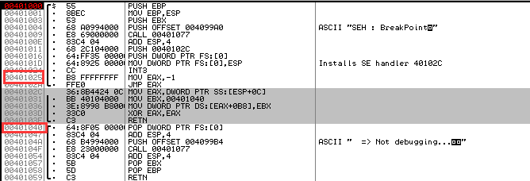
下来看看代码执行过程
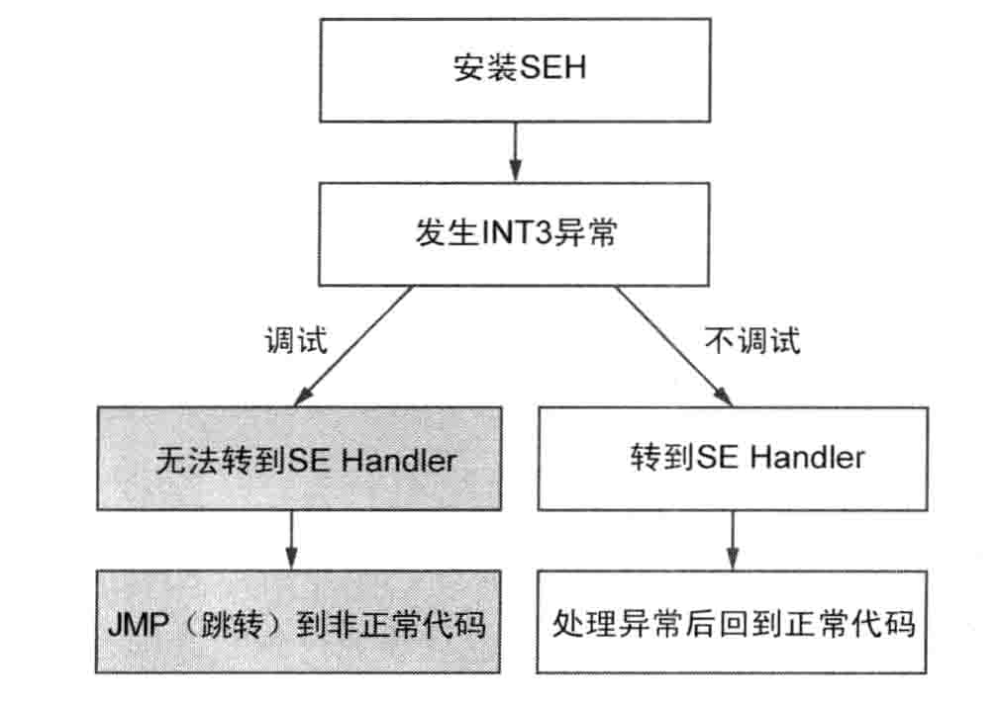
逐个分析代码
#1 安装SEH
首先以下代码安装SEH（40102C）1
2
300401011 PUSH 40102C
00401016 PUSH DWORD PTR FS:[0]
0040101D MOV DWORD PTR FS:[0],ESP
#2 发生INT3异常
以下代码用来触发INT3异常1
00401024 INT3
#3-1调试运行-终止调试
若进程处于调试状态 则需要用调试器处理异常 INT3指令是CPU中断指令 在用户模式下什么也不做 继续执行以下命令
1 | 00401025 MOV EAX,-1 |
由于处在调试中 所以跳转到非法地址 无法继续调试
**#3-2正常运行-运行SEH
如果进程处于非调试状态 那么执行到INT3指令时就会调用前面已经注册的SEH1
2
3
4
50040102C MOV EAX,DWORD PTR SS:[ESP+0C]
00401031 MOV EBX,401040
00401036 MOV DWORD PTR DS:[EAX+0B8],EBX
0040103D XOR EAX,EAX
0040103F RETN
SS:[ESP+0C]是CONTEXTpContext结构体的指针 而CONTEXTpContext结构体正是SEH的第三个参数 它是一个发生异常的线程CONTEXT结构体 DS:[EAX+0B8]指向pContext–>Eip成员 所以401036地址处的MOV指令用来将结构体的EIP值修改为401040 然后 异常处理器返回为0 接下来 发生异常的线程再次从修改后的EIP地址处（401040）开始运行
#4 删除SEH1
200401040 POP DWORD PTR FS:[0]
00401047 ADD ESP,4
进程正常运行时 #1中注册的SEH（40102C）就会被删除
破解之法
破解的办法：在od 调试选项exception选项中，选择int3 breaks后，调试器就会忽略被调试进程中发生的int3异常，由自身SEH处理。
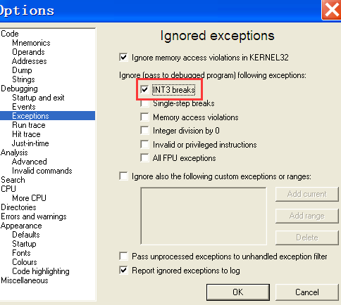
SetUnhandledExceptionFilter()
进程中发生异常的时候，若SEH未处理或注册的SEH不存在就会调用kernel32!UnhandledExceptionFilter()API.会运行系统的最后一个异常处理器，弹出错误框，终止进程运行。
值得注意的是 kernel32!UnhandledExceptionFilter() 内部调用了ntdll!NtQueryInformationProcess(ProcessDebugPort)API(静态反调试及时），来判断进程是否正在调试进程。若进程正常运行（非调试运行），则运行系统最后的异常处理器；若进程处于调试中，则将异常派送给调试器。通过kernel32!SetUnHandledException()API可以修改系统最后的异常处理。
1 | LPTOP_LEVEL_EXCEPTION_FILTER WINAPI SetUnhandledExceptionFilter ( _In_LPTOP_LEVEL_EXCEPTION_FILTER lpTopLevelExceptionFilter |
lpTopLevelExceptionFilter ，函数指针。当异常发生时，且程序不处于调试模式（在vs或者别的调试器里运行）则首先调用该函数。调用该函数修改系统最后异常处理器时，只要将新得Top Level Exception Filter函数地址传递给函数的 lp TopLecelException参数即可
1 | typedef struct EXCEPTION POINTERS { |
基于异常的反调试技术中，通常先特意触发异常，然后再新注册的Last Exception Filter内部判断进程正常运行还是调试运行，并根据判断结果修改EIP值，系统在此过程中自行判断调试与否。
练习DynAD_SUEF.exe
在OD打开程序 在401030处设置断点 下面边调试代码边了解程序执行流 首先调用printf（）函数输出字符串 代码如下：1
2
3
4
500401030 /$ 55 PUSH EBP
00401031 |. 8BEC MOV EBP,ESP
00401033 |. 68 A0994000 PUSH OFFSET 004099A0 ; ASCII "SEH : SetUnhandledExceptionFilter()
00401038 |. E8 4A000000 CALL 00401087
0040103D |. 83C4 04 ADD ESP,4
利用的思路如下：
1）调用新的SetUnhandledExceptionFilter()来注册新的Top Level Exception Filter(新的Excetion Filter函数中包含异常处理代码）
1 | 00401040 |. 68 00104000 PUSH 00401000 ; /Filter = DynAD_SUEF.401000 |
2）在Top Level Exception Filter（401000）和Kernel32!UnhandledExceptionFilter()API设置断点 然后强制触发断点，利用相应的异常来触发异常（如尝试向未定义的进程虚拟内存地址（0)写入）然后程序回调用Kernel32!UnhandledExceptionFilter()函数。
1 | 00401050 |. 33C0 XOR EAX,EAX |
若执行401052地址处的指令 程序将向未定义的进程虚拟内存（0）写入值 这会引发无效内存非法访问异常 按下shift+f7 接着程序会在设有断点的Kernel32!UnhandledExceptionFilter()函数内部自动暂停
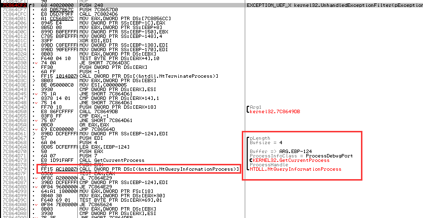
7c864d79处的CALL ntdll!NtQueryInformationProcess()API指令 其第二个参数传入的值为ProcessDebugPort（7） 这就是前一章节讲的静态反调试技术 用来探测调试器的 为了继续调试 调用该函数后需要将第三个参数的值 修改为0
破解之法
破解的时候首先使用Kernel32!UnhandledExceptionFilter()内部使用的ntdll!NtQueryInformationProcess()API()失效，然后调用SetUnhandledExceptionFilter()API跟踪注册的Exception Filter，在正常运行的时候跳转到那个地址就可以。
Timing Check
在调试器中逐跟踪程序代码比程序正常运行（非调试运行）耗费的时间要多出很多。Timing Check技术通过计算运行时间的差异来判断进程是否处于被调试状态。
破解的方法：只要直接操作获取的时间信息获取比较时间的语句就可以。（Timing Checking技术通常用作反模拟技术，程序在模拟器中运行时，运行速度比程序正常运行慢很多，所以Timing Check技术也能用来探测程序是否在模拟器中运行。)
时间间隔测量方法
大致方法分为两种，一种事利用CPU计数（Counter),另一类事利用系统的实际时间（Time)
RDTSC
x86寄存器有一个名为TSC（Time Stamp Counter,时间戳计数器的64位计数器CPU,CPU对每个Clock Cycle(时终周期）计数，然后保存到TSC.RDTSC是一条汇编指令，用来将TSC值读入EDX:EAX（高位32位保存到EDX寄存器，低32位保存到EAX寄存器）。程序判断的时候会调用两次RDTSC，通过计算两次调用的时间间隔来判断进程是否处于调试状态（只要使用一次f7或f8）命令，时间间隔就会大于0xffffffff。
练习DynAD_RDTSC.exe
在OD中打开程序 转到401000处
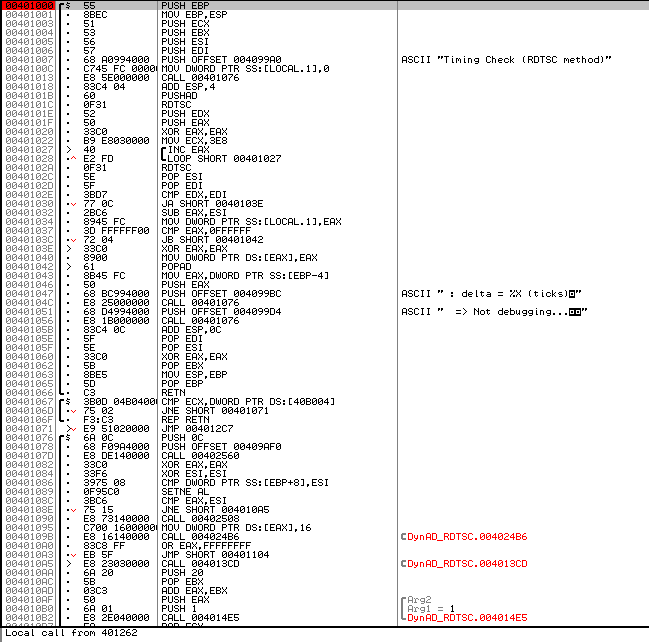1
2
3
4
5
6
7
8
9
10
11
12
13
14
15
16
17
18
19
20
21
22
23
24
25
26
27
28
29;第一次执行RDTSC指令一将TSC保存到EDX:EAX (64位)0040101C RDTSC
;将结果值放入栈
0040101E PUSH EDX0040101F PUSH EAX
;用于消耗时间的循环(实际代码相当复杂)00401020 XOR EAX, EAX00401022 MOV ECX,3E800401027 INC EAX
00401028 LOOPD SHORT 00401027
;第二次执行RDTSC指令0040102A RDTSC
;在栈中输入第一次求得的TSC0040102C POP ESI0040102D POP EDI
;比较1一Count的high order bits ;0040102E CMP EDX, EDI
00401030 JA SHORT 0040103E
;比较2一Count的Low order bits
;若比特定值(0xFFFFFF) 大，则断定处于调试状态00401032 SUB EAX, ESI
00401034 MOV DWORD PTR SS: [EBP-4] , EAX00401037 CMP EAX, OFFFFFF0040103C JB SHORT 00401042
;在比较语句作用下进入异常触发代码，进程非正常终止0040103E XOR EAX, EAX
00401040 MOV DWORD PTR DS: [EAX], EAX ;异常!!!
;忽略比较语句，继续运行00401042 POPAD
从上述代码可以看出，2次RDTSC指令调用之间存在一-定的时间间隔，通过计算时间差值( Delta )来判断进程是否处于调试状态。Delta值不固定，一般在0xFFFF~0xFFFFFF之间取值。40101C~40102A地址间的代码区域中，只要执行1次StepInto(F7)或StepOver(F8)命令，Count的间隔就会大于0xFFFFFFFF。
破解之法
1)不使用跟踪命令，直接使用RUN命令越过相关的代码。
2）操作第二个RDTSC的结果值（EDX:EAX)
3) 操作判断之后的条件分支
4）利用内核模式驱动程序使RDTSC指令无效：利用内核驱动程序可以从根本上使基于RDTSC的动态反调试技术失效（其实OllyAdvanced Plugin就采用了该方法）。
陷阱标志
陷阱标志指的是EFLAGS寄存器的第9个比特位
单步执行
TF设置为1的时候，CPU将进入单步执行（Single Step)模式。单步执行模式中，CPU执行1条指令后即触发一个EXCEPTION_SINGLE_STEP异常，然后陷阱标志位会清零。该异常可以与SEH技法结合，在反调试技术中用于探测调试器。
练习DynAD_SingleStep.exe
我们在OD中打开程序
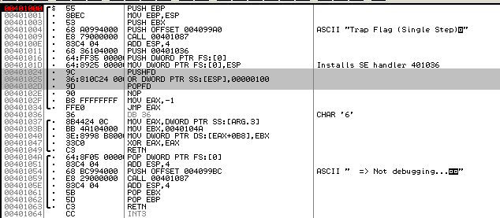
对主要代码进行说明1
2
3
4
5
6
7
8
9
10
11
12
13
14
15注册SEH
00401011 |. 68 36104000 PUSH 00401036
00401016 |. 64:FF35 00000 PUSH DWORD PTR FS:[0]
0040101D |. 64:8925 00000 MOV DWORD PTR FS:[0],ESP ; Installs SE handler 401036
因无法修改EFLAGS 故通过栈修改
00401024 |. 9C PUSHFD 将EFLAGS寄存器的值压入栈
00401025 |. 36:810C24 000 OR DWORD PTR SS:[ESP],00000100 将TF位置为1
0040102D |. 9D POPFD 将修改后的TF标志值存入EFLAGS
执行下列指令后 触发EXCEPTION_SINGLE_STEP异常
若正常运行 则运行前面注册过的SEH
若为调试运行 则继续执行下列指令
0040102E |. 90 NOP
调试运行时继续运行下列代码
0040102F |. B8 FFFFFFFF MOV EAX,-1
00401034 \. FFE0 JMP EAX
由于我们不能直接修改EFLAGS寄存器的值，所以使用PUSHFD/POPFD指令与or运算指令修改陷进标志的值。
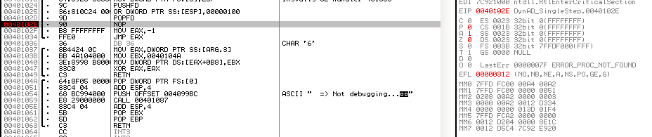
我们从寄存器窗口可以看到 EFLAGS寄存器（EFL）的值已经被修改为312 陷阱标志已经成功设置为1 从现在开始 CPU进入单步执行模式 下面执行40102E地址处的NOP指令 然后发生了EXCEPTION_SINGLE_STEP异常
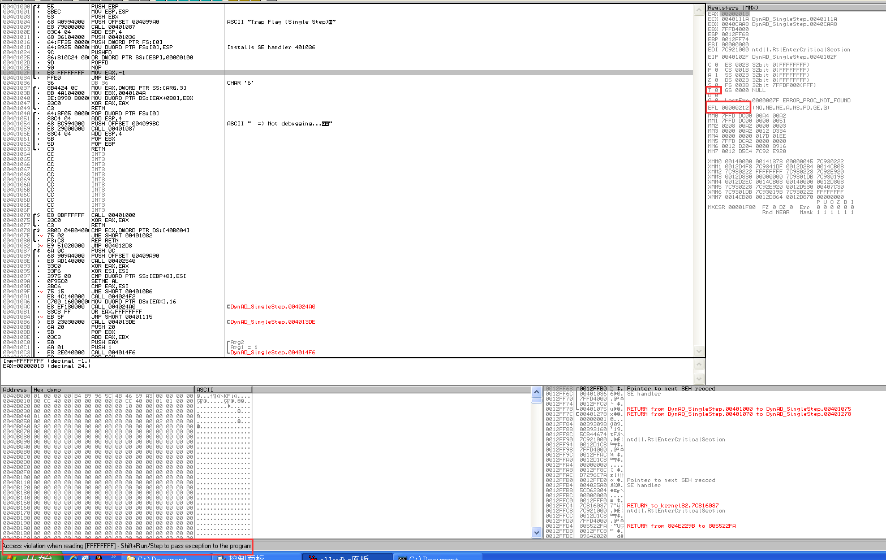
发生异常的时候，若进程处于非调试状态，则运行SEH运行正常的代码，若进程处于调试状态的时候，则无法转到对应的SEH，会执行异常的指令（这里在SEH里面，进程会跳转到正常的代码继续执行）
破解之法
OD 的调试选项，option->debugging options->exception:选择忽略EXCEPTION_SINGLE_STEP异常），让被调试者直接处理EXCEPTION_SINGLE_STEP异常。
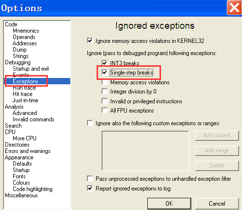
INT 2D
INT 2D 为内核模式中用来触发断点异常的指令，也可以在用户模式下触发异常。但程序调试运行的时候不会触发异常，只是忽略。这种在正常运行与调试运行中表现出的不同可以很好的利用于反调试技术。下面介绍几个INT2D 的几个特征
1.忽略下一条指令的第一个字节
在调试的时候执行完INT 2D指令后，下一条指令的第一个字节将被忽略。后一个字节将会被识别为新的指令继续执行 如图所示
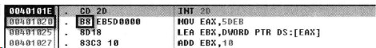
执行完INT 2D后，会重新解析指令。
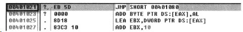
使用INT 2D的反调试技术能够形成较强的代码混淆效果，从而在一定程度上防止代码逆向分析人员调试程序。
2.一直运行到断点处
INT 2D指令的另一个特征使，使用F7或者F8,命令跟踪INT 2D指令的时候，程序不会停止在其下条指令开始的地方，而是一直运行程序，就想使用RUN（F9）命令运行程序一样。（这个特性只会在OD中才有，原因在于执行INT 2D 之后原有的代码字节序被改变了，就是说，若程序在执行的过程中改变，则进程不能单步暂停，若想停止跟踪代码，需要事先在相应的地址处设置断点。)
练习DynAD_INT2D.exe
用OD打开程序 跳到401000处
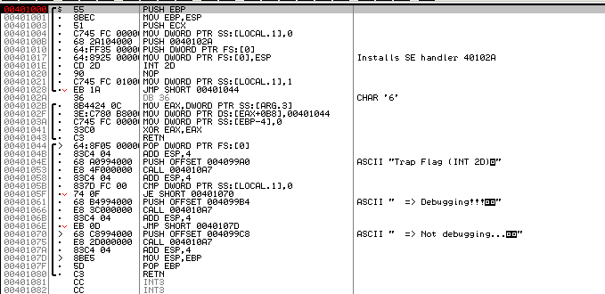
程序正常运行(非调试运行)时，执行完40101E地址处的INT 2D指令后，发生异常，转去运行SEH ( 40102A )。在异常处理器中先把EIP值修改为401044，然后将[EBP-4]变量(局部变量[EBP-4]是BOOL类型变量，用来检测是否存在调试器)的值设置为0 ( FALSE )。然后转到401044地址处继续执行，最后执行40105B地址处的CMP/JE条件分支指令，向控制台输出字符串(“NotDebugging”)。
程序调试运行时,执行INT 2D指令后不会运行SEH,而是跳过1个字节( 90 ),继续执行401021地址处的MOV指令，将[EBP-4]变量设置为1 ( TRUE ),然后跳转到401044地址处继续执行，向控制台输出“Debugging” 字符串。可用图简单表示上面2个执行过程
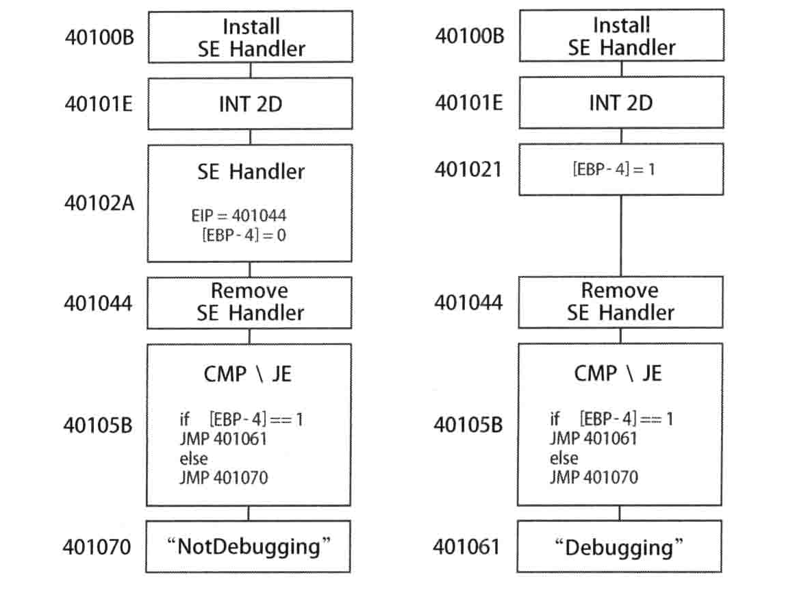
破解之法
只要简单修改对应的代码就可以破解这种调试技术，但是实际调试过程中，有时必须跟踪SEH逐行调试代码，这个时候就需要另一种方法使程序执行到SEH，利用陷阱标志能够使程序进入SEH标志。（TF=0的时候，跟踪INT 2D指令后，其下条指令的第一个字节会被忽略，程序继续执行；但是TF＝１的时候，其后面的1一个字节不会被忽略，代码仍被正常识别）
首先让OD忽略EXCEPTION_SINGLE_STEP异常 然后运行到40101E地址处 在SEH处（40102A）设置断点
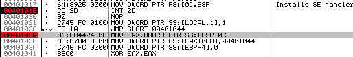
如下图所示 双击修改TF或EFL值 将TF位置为1 从现在开始 CPU进入单步执行模式 单步执行模式下 CPU执行一条指令即触发异常 然后进入SEH处理 接下来按下F7或者F8键 执行40101E地址处的指令
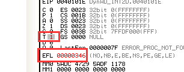
虽然执行了40101E地址处的INT 2D指令，但并未发生异常，TF的值也未变为0 (在前面的;DynAD_ SingleStep.exe示 例中我们知道，CPU在单步模式下执行1条指令即触发异常，且TF值会清零),如图所示。原因在于，INT 2D指令原为内核指令，在用户模式的调试器中不会被识别为正常指令。因此调试器在401020地址处的NOP指令处暂停。TF=0时，跟踪INT 2D指令后，其下条指令的第-个字节会被忽略，程序继续执行;但TF=1时，其后面的1个字节不会被忽略，代码仍被正常识别。接下来，按F7键( StepInto)或F8键( StepOver)执行NOP指令。
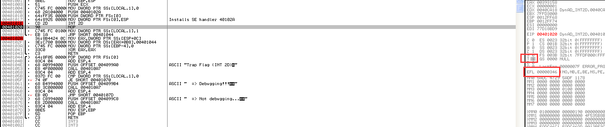
单步执行模式下执行正常指令NOP后 就会触发异常 调试暂停在设有断点的SEH处 同时TF值清零 这样就能进入SEH继续调试了
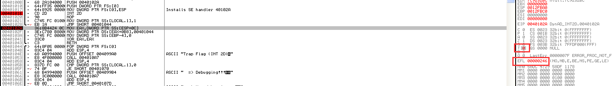
0xCC 探测
程序调试的时候，会设置很多软件断点，若能够检测到该指令，就能够判断程序处于调试状态。
API断点
若想调试某个局部功能的时候，可以直接在要调试的API处设置好断点，再运行程序。这样API代码开始的第一个字节已被设置为0xCC,可以用这个来对程序进行反调试，判断程序是否处于调试状态。
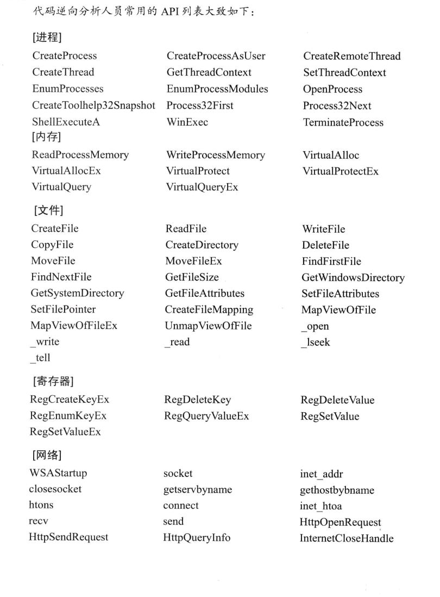
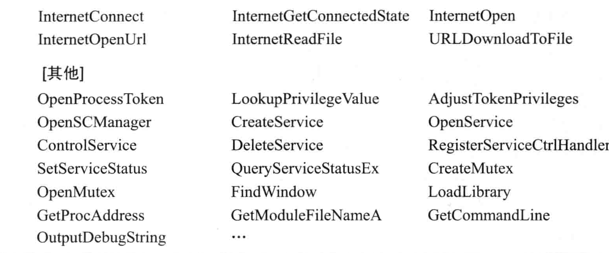
练习
我们以保存文件的使用的kernel!32CreatFileW()API为例
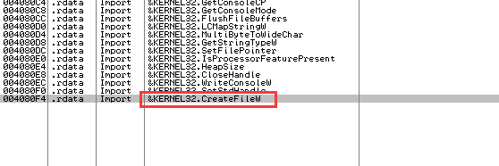
找到之后双击进入在该API代码首地址处设置断点 然后获取kernel!32CreatFileW()API的起始地址检测代码的第一个字节 即可判断进程是否处于调试状态
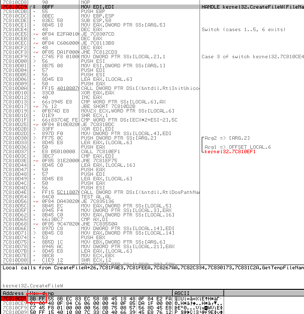
破解之法
针对上面这种反调试技术有效的方法，向系统API设置断点的时候因该尽量避开第一个字节，将它设置在代码的中间部分，此外，使用硬件断点也能够避开上面这种反调试技术。
比较检验和
比较特定代码区域的校验和（Checksum)值。比如当在代码调试的时候设置断点，这样，内存的数据就会变成0xcc,这样的话，新的校验和的值和原来的检验和的值就不一样了，这样比较校验和就可以判断进程是否处于调试状态。
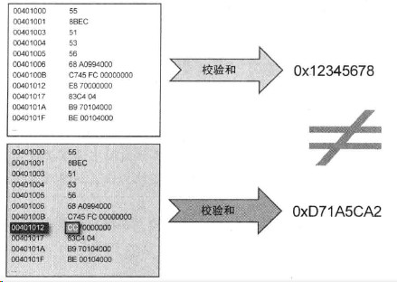
练习DynAD_Checksum.exe
在OD中打开程序 转到401000处
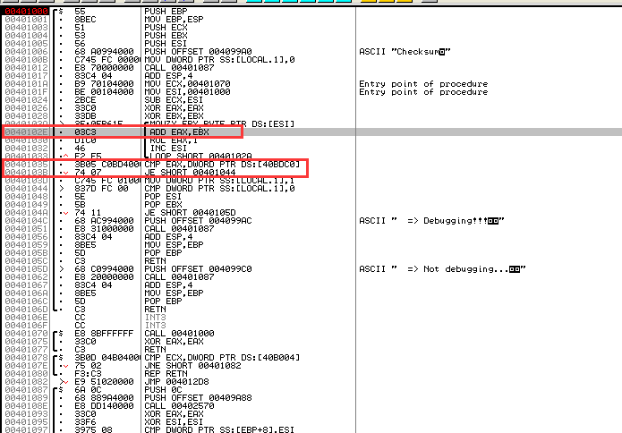
如图所示 程序的核心代码是求校验和值的循环 及其下方的CMP/JE条件分支指令1
2
3
4
50040102A |> /3E:0FB61E /MOVZX EBX,BYTE PTR DS:[ESI]
0040102E |. |03C3 |ADD EAX,EBX
00401030 |. |D1C0 |ROL EAX,1
00401032 |. |46 |INC ESI
00401033 |.^\E2 F5 \LOOP SHORT 0040102A
40102A地址处ESI的初始值为401000 (参考40101F地址处的MOV指令),而ECX被用作LoopCount ( 循环计数)，其值为70 (参考401024地址处的SUB指令)。代码中的循环用来计算401000~40106F区域的校验和值，先读取1个字节值，再执行ADD与ROL指令计算，然后将值保存到EAX寄存器(循环次数就是循环计数)。
像这样求得校验值后 接下来要将和原值比较 并执行条件分支语句1
200401035 |. 3B05 C0BD4000 CMP EAX,DWORD PTR DS:[40BDC0]
0040103B |. 74 07 JE SHORT 00401044
在上面的循环中求得当前校验和值被保存在EAX寄存器 程序开发时计算的校验和值保存在[40BDC0]中 比较它们 则表明401000-40106F代码区域中设有断点 或者代码已经被修改
破解之法
只要不在计算CRC的代码区域中设置断点或者修改其中的代码，基于校验和的反调试几乎是就会失效。最好的办法就是修改CRC的比较语句。与其他反调试技术类似，基于校验和比较的反调试代码会隐藏到程序各处，可能存在很多校验和的代码，这会增加破解的难度。